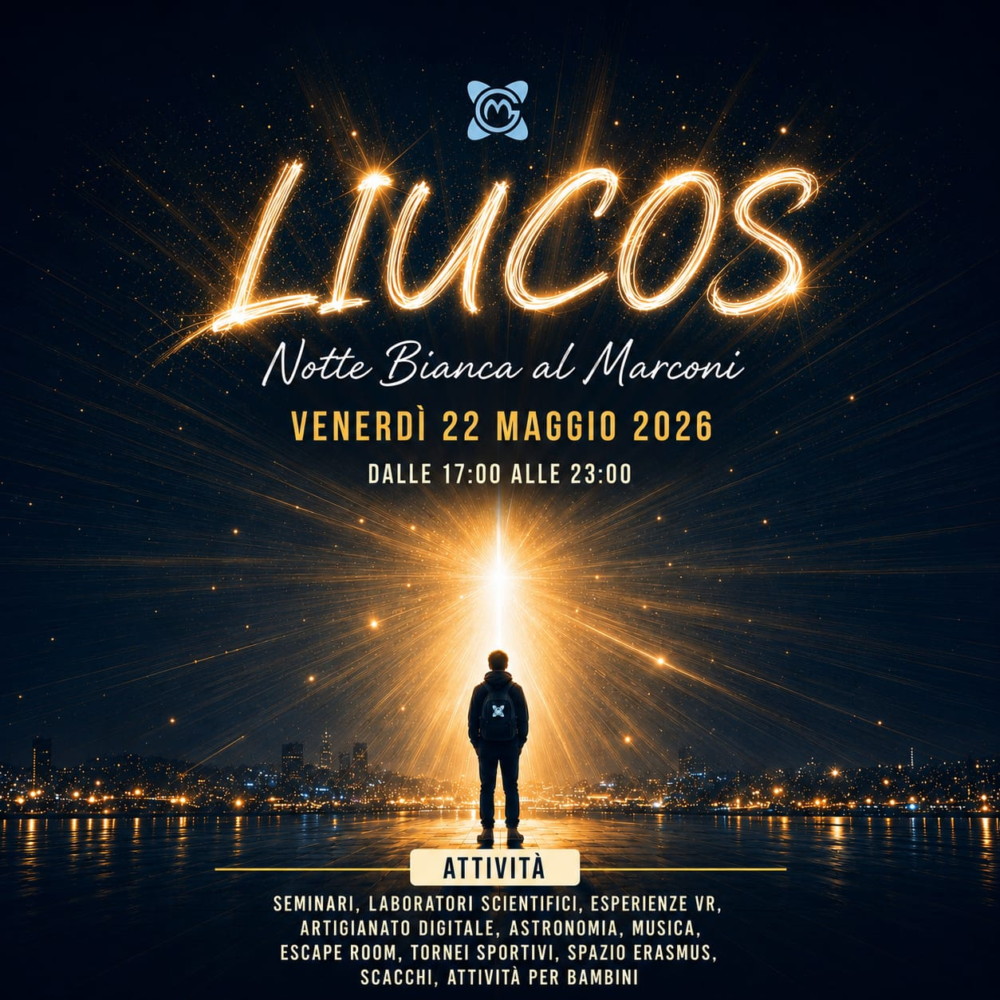

Notte Bianca al Marconi

L'IIS G. Marconi di Civitavecchia è un istituto tecnico e professionale che forma ogni anno centinaia di studenti in ambiti che spaziano dall'elettronica all'informatica, dall'elettrotecnica ai trasporti marittimi, fino al turismo e ai servizi sociali.
La Notte Bianca al Marconi è il grande evento annuale aperto alla città: una sera in cui le porte della scuola si spalancano per mostrare tutto ciò che i nostri studenti e docenti sanno fare. Laboratori, tornei, concerti, osservazioni astronomiche, attività per bambini e molto altro ancora.
L'edizione 2026 porta il nome LIUCOS — un tema cosmico che celebra la curiosità, la luce della conoscenza e l'apertura verso l'universo. Un'intera serata di scienza, tecnologia, cultura e divertimento.
Laboratori di chimica, astrofisica, fisica delle particelle e osservazione astronomica con i telescopi degli Astrofili.
Realtà virtuale premiata, artigianato digitale, escape room, radio Marconi e progetti degli studenti di elettrotecnica.
Tornei di basket, calcio balilla e scacchi aperti a tutti i partecipanti per una sana competizione.
DJ set nel giardino interno, balli di gruppo e un grande concerto finale per concludere la serata in bellezza.
Erasmus Corner, dialogo tra culture, seminari, laboratorio psico-ludico di benessere e spazio internazionale.
GIOCABIMBI: attività ludiche dedicate ai più piccoli dai 2 ai 10 anni, in un ambiente sicuro e divertente.
Via Montello 20
00053 Civitavecchia (RM)
📍 Raggiungibile dal centro di Civitavecchia
🚌 Servito da linee bus locali
🚗 Parcheggio nelle vie adiacenti
L'evento è a ingresso libero e aperto a tutta la comunità.
Apri in Google Maps